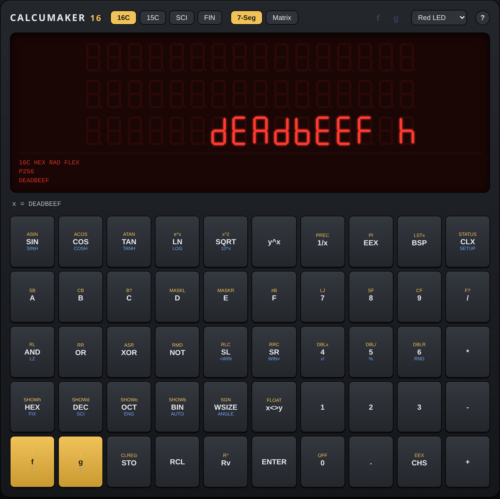
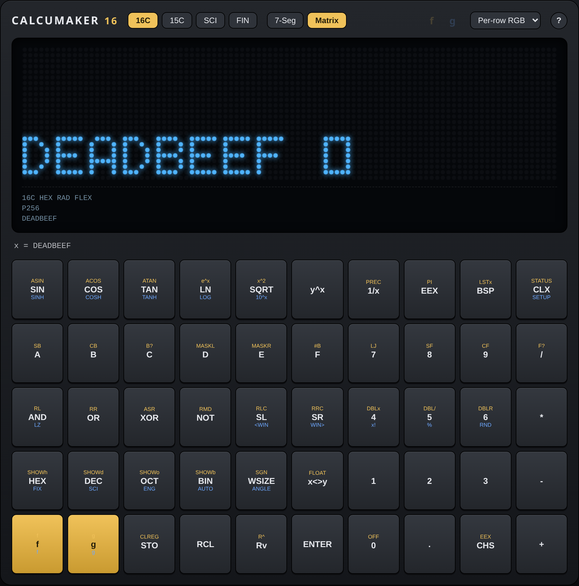

A programmer's core
HEX / DEC / OCT / BIN entry, bitwise and shift/rotate operators, selectable word size, and two's-complement, one's-complement or unsigned integer modes. The HP-16C idea, done properly.
Every base. Every digit.
Calcumaker is an open-hardware line of programmer's and technical RPN calculators. The first device, Calcumaker 16, carries the HP-16C tradition — hex, octal, binary, bitwise operators, selectable word sizes — and extends it with math that is correct to as many digits as you ask for.
Status: a work in progress. The engine and the browser emulator run today; the Calcumaker 16 boards are still in bring-up. Nothing is for sale — this is an open project you can read, build and fork.
HEX / DEC / OCT / BIN entry, bitwise and shift/rotate operators, selectable word size, and two's-complement, one's-complement or unsigned integer modes. The HP-16C idea, done properly.
GNU MP for unbounded exact integers. MPFR for correctly-rounded floating point and transcendentals. MPC for complex numbers. One numeric path — the answer doesn't change depending on how you got there.
Three rows of sixteen real 7-segment digits show the top of the RPN stack at once, on their own angled board. No menu-diving to see what you're operating on.
An alternate 96 × 24 RGB dot-matrix module — 2,304 addressable LEDs driven by an RP2040 — drops onto the same connector. Full alphanumerics, scrolling and colour the 7-segment can't do.
Fifty full-size Cherry MX switches in a wide 5 × 10 layout, per-key diodes, annunciator LEDs, and a dedicated STM32G0 scanner so the matrix never crosses the board stack.
16C, 15C, SCI and FIN. One engine, different key layers and display conventions — chosen at runtime, printed on the keycaps in gold and blue.
On Calcumaker 16 the display lives on its own angled PCB. Both modules speak the same protocol, so the calculator doesn't care which one you fit. These are screenshots of the emulator rendering the real segment data.


The 16 names this device, not the line: it's the base-16 / HP-16C heritage. It leaves room for siblings with different key layers and displays.
no_std, async via embassyNot a reimplementation. The Calcumaker 16 emulator compiles the real engine to WebAssembly — the same Rust core, linked against GNU MP, MPFR and MPC cross-built with wasi-sdk. Key presses go through the same matrix and keymap; the display is painted from the same segment bytes the hardware would push to its drivers. It all runs client-side.
The firmware is AGPL-3.0 — compatible with the LGPLv3 libraries it depends on. The hardware is CERN-OHL-S v2, strongly reciprocal, to match. Schematics are generated from data manifests and live in the repo alongside the engine, the emulator and the board firmware.